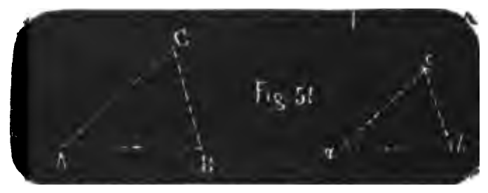

§§ 113–117: Trasporto, moltiplicazione e verifica degli angoli (Fig. 51–53)¶
LIBRO OTTAVO
DELLA COSTRUZIONE, MOLTIPLICAZIONE E DIVISIONE DEGLI ANGOLI E DELLE LINEE TRIGONOMETRICHE
113. Avv. Quando noi diremo: costruire un angolo \(abc\) col compasso (fig. 51), intendiremo di dire: trovare col compasso tre punti \(a, b, c\); ovvero dato alcuno di essi, trovare gli altri in guisa che volendo poi guidare per due di essi \(a, b\) una retta, e per uno di essi due \(b\) e pel terzo \(c\) un’altra retta; si abbia un angolo \(abc\) della quantità che si vuole. Benchè l’angolo \(abc\) non sia veramente costrutto, se non quando si sono guidate attualmente le rette \(ab, bc\), per tirare le quali non può bastare il compasso solo; non ostante per brevità adopreremo spesso la prima frase, intendendo, che equivalga nel sentimento alla seconda.


114. Prob. Essendo dato un angolo \(ABC\) per via dei tre punti \(A, B, C\) (fig. 51), e dati due altri punti \(b\) ed \(a\); trovare un punto \(c\), cosicchè l’angolo \(abc\) sia eguale ad \(ABC\).
Sol. Trovata (§ 93) una quarta proporzionale alle tre distanze \(AB, ab, BC\), con questa presa per raggio, e col centro \(b\) si descriva un arco, che passi per \(c\). Trovata pure una quarta proporzionale alle tre \(AB, ab, AC\), con essa presa per raggio, e col
f. 0089 · p. 64centro \(a\) si descriva un altro arco, che tagli il primo in \(c\). Sarà l’angolo \(abc = ABC\).
Dim. Poichè i due triangoli \(ABC, abc\) hanno i lati proporzionali, avranno eguali gli angoli opposti ai lati proporzionali (5, lib. VI).
115. Servirà adunque la soluzione del Problema precedente (§ 114) a sciogliere anche il problema: Dati i tre punti (fig. 51) \(A, B, C\) estremi agli angoli di un triangolo, e due \(a, b\) estremi di un altro, trovare il terzo estremo \(c\) in guisa, che il triangolo \(abc\) riesca simile al triangolo \(ABC\).
116. Prob. Duplicare, triplicare, quadruplicare ecc. (fig. 52) un angolo dato \(BAC\) (§ 113).
Sol. Col centro \(A\), e coi raggi \(AB, AC\) si descrivano due archi indefiniti \(BDF, CE\). Si faccia a \(CB = CD\). Sarà l’angolo \(BAD\) duplo di \(BAC\).
Si faccia a \(CD = DE\). Sarà l’angolo \(BAE\) triplo di \(BAC\).
Si faccia a \(DE = EF\). Sarà \(BAF\) quadruplo di \(BAC\) ecc.
Per quadruplicarlo si poteva ancora fare a \(BD = DF\).
Dim. Avendo i triangoli \(BAC, CAD, DAE, EAF\), ecc. tutti i lati rispettivamente eguali, saranno eguali gli angoli \(BAC, CAD, DAE, EAF\), ecc. (8, lib. I). Dunque ecc. Quindi essendo l’angolo \(BAD = DAF\), sarà anche \(BD = DF\) (4, lib. I).

117. Prob. Esaminare se l’angolo \(BAG\) (fig. 53) dato per via dei tre punti \(B, A, G\) sia semiretto.
Sol. Col raggio \(AB\), centro \(A\) si descriva la semicirconferenza \(BFE\) (§ 64). Si faccia a \(GB = GF\) (§ 10). Se sarà \(BF = FE\); l’angolo \(BAG\) sarà semiretto. Se sarà \(BF\) minore o maggiore di \(FE\); l’angolo \(BAG\) sarà minore o maggiore di un semiretto.
Dim. Poichè l’angolo \(BAF\) è duplo dell’angolo \(BAG\) (§ 116); se l’angolo \(BAG\) è semiretto, sarà retto \(BAF\); quindi \(BF = FE\) (§ 83). Altrimenti se \(BAG\) è minore o maggiore di un semi-

retto, sarà \(BAF\) minore o maggiore di un retto; quindi \(BF\) minore o maggiore di \(FE\) (24, lib. I).